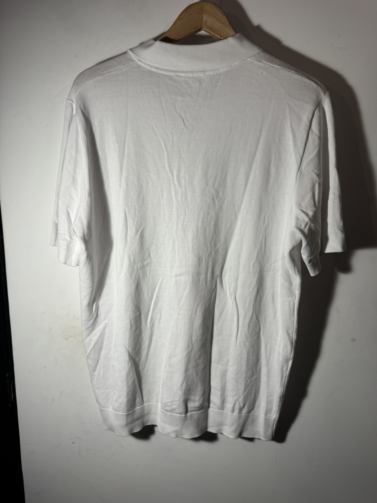
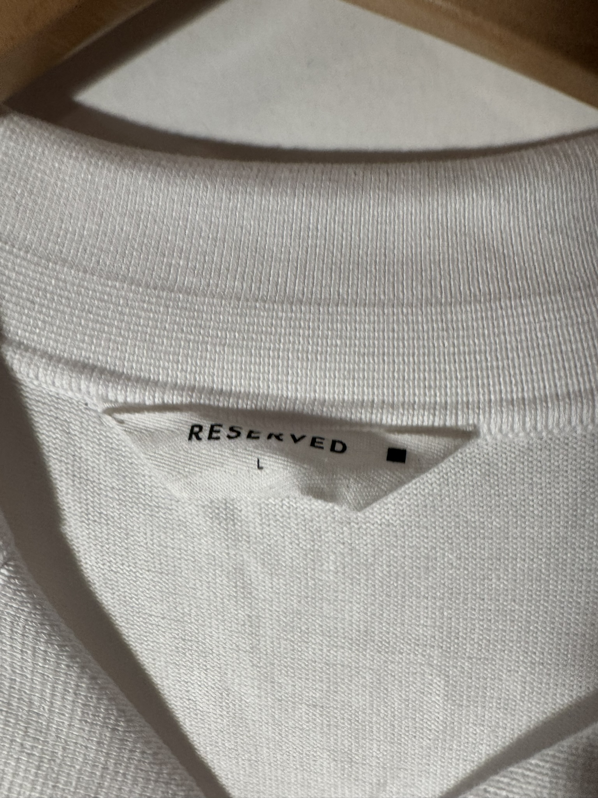
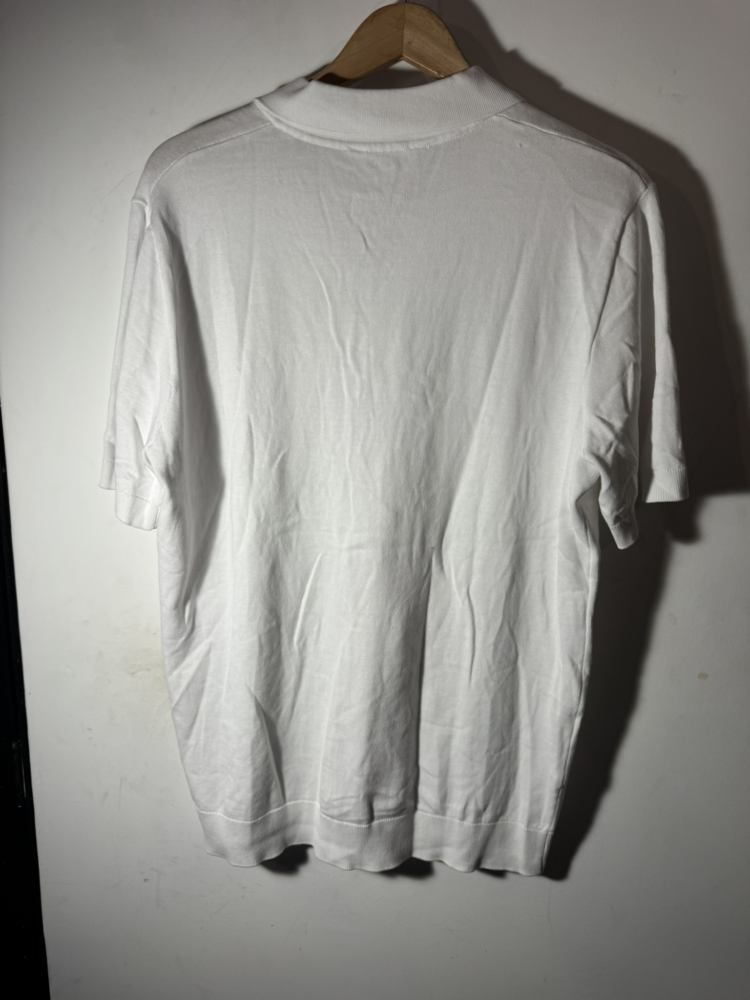
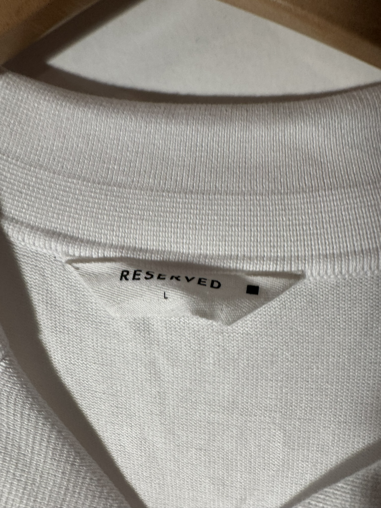

$250.00 MXN
Descripción
Camisa de manga corta en tejido de punto blanco con cuello abierto estilo "Camp Collar" y cierre de botones, combinando la frescura del algodón con una elegancia relajada.
Marca
Reserved
Tallas Disponibles
L
Comprar por WhatsApp 💬